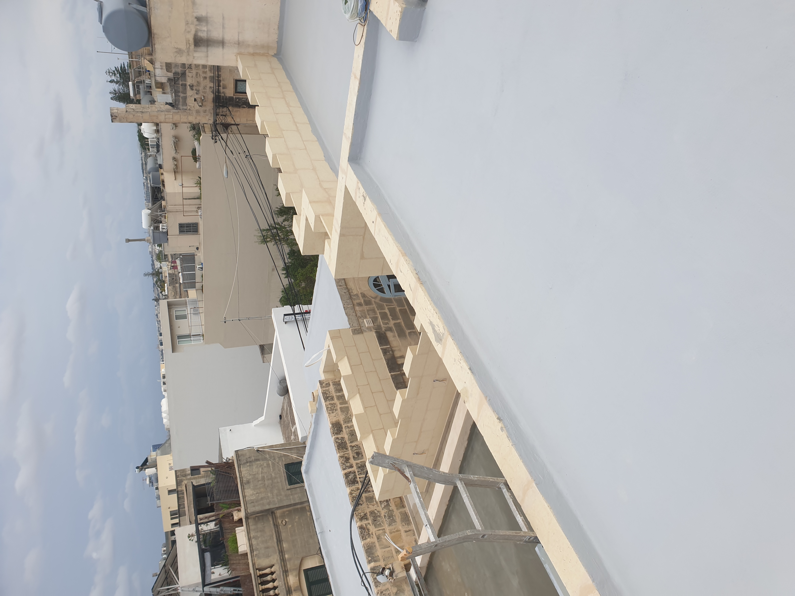
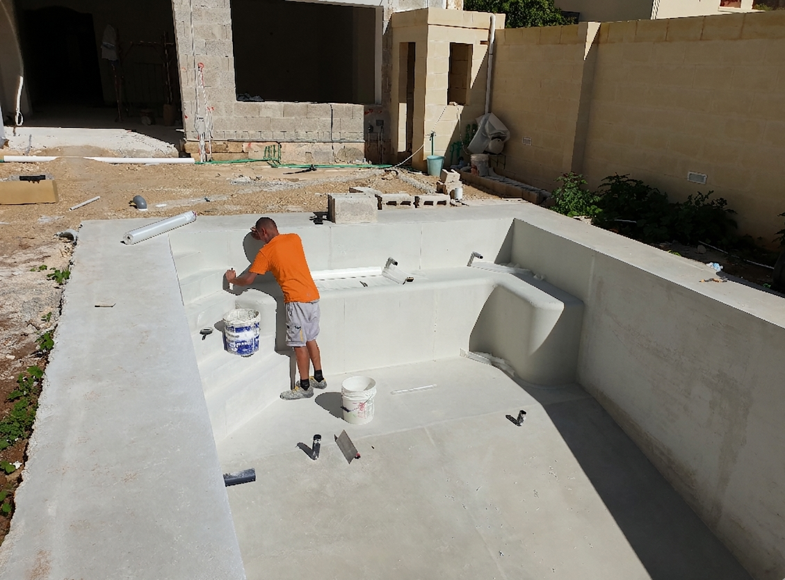
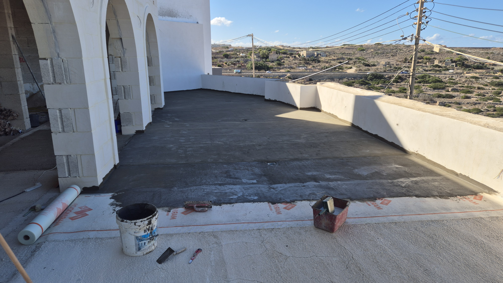
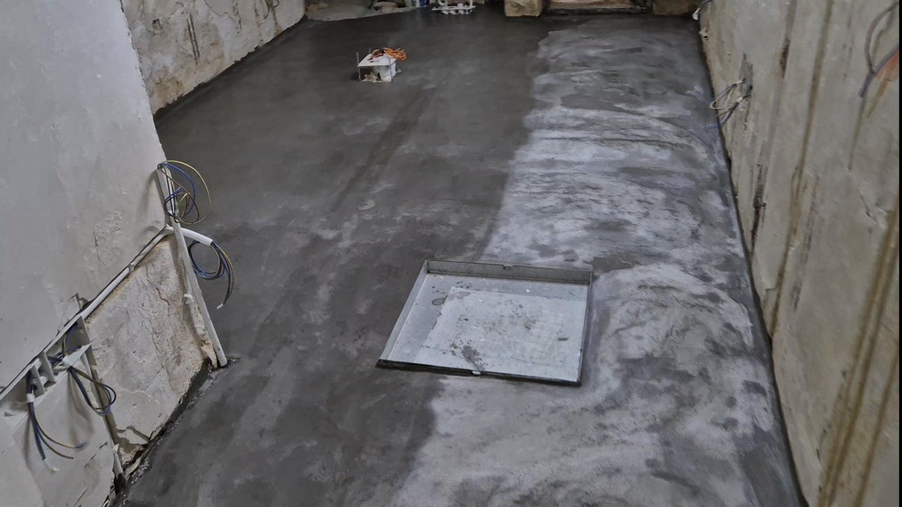

Waterproofing Services in Malta
Water ingress is one of the most damaging and costly problems in any property. Our waterproofing service creates a reliable barrier on roofs, terraces, balconies, bathrooms, wet rooms, and planter boxes — preventing moisture from penetrating slabs and causing leaks to rooms below.
We apply the correct system for each situation, whether that is a membrane applied cold, a torch-on bituminous system, a liquid-applied coating or a cementitious slurry for bathroom wet areas.





What Our Waterproofing Service Includes
- Roof and flat terrace waterproofing membranes
- Balcony and external floor waterproofing
- Bathroom and wet room tanking
- Shower tray and basin area sealing
- Planters and garden wall waterproofing
- Underground cistern and tank waterproofing
- Perimeter and corner reinforcement detailing
- Flood testing before tiling
Materials We Use
- Torch-on SBS bituminous membrane for roofs and terraces
- Cementitious crystalline waterproofing slurry (Sika, Mapei)
- Liquid polyurethane or acrylic waterproofing coatings
- Flexible membrane tape for corners and pipe penetrations
- Non-woven geotextile fabric for protection layers
- XPS insulation boards where thermal-waterproofing combination is required
Why It Matters
Waterproofing must be completed before screed and tiling, and it must be tested — typically by ponding water for 24–48 hours before any subsequent layers. Skipping or rushing waterproofing is a false economy that leads to extremely expensive remediation work later. We never tile over untested waterproofing.